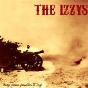
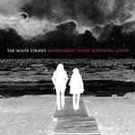
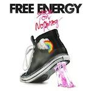

Music Reviews
-

She & Him Volume Two
M Ward and Zooey Deschanel go back to the golden age of pop on their unimaginatively-titled second album, Volume Two.
Joe Rivers reviews... -
Efterklang Magic Chairs
Danish visionaries Efterklang return with album number three, their first for the prestigious 4AD. A stripped down sound and a more direct focus means this is a record of pop gems to be truly savoured.
Jody White again discovers how less really can be more... -

Gorillaz Plastic Beach
Third classic from the cartoons.
George Booker reviews... -
Titus Andronicus The Monitor
The Monitor is the best album of 2010 so far. Get that shit now.
Nate Adams reviews... -

The Izzys Keep Your Powder Dry
The Izzys are a New York band who've given up searching for the new sound. No doubt mining the same influences as The Rolling Stones, The Izzys are looking backwards and southwards for their inspiration.
Paul Fowler's got some (spit, PING!) quarters for the jukebox... -

The White Stripes Under Great White Northern Lights
Can a band that has a reputation as a illustrious live act capture it on record?
Daniel Dylan Wray examines the White Stripes live experience... -

We Only Said We Only Said
We Only Said make an album of incredibly uninteresting guitar centered post-rock.
Andrew Baer zones out for a while, but does so pleasantly... -

Free Energy Stuck On Nothing
Stuck on Nothing revels in unpretentious, youthful glee - and ends up being really likable because of it.
Luke Winkie air-sings into the bottom of a hairbrush... -
High On Fire Snakes For The Divine
High On Fire return with their fifth fist to the air. Limber up those necks, people.
Sean Caldwell reviews... -

Joanna Newsom Have One On Me
Easily the best triple-album of harp-based baroque folk you'll ever hear.
Joe Rivers breaks out the superlatives...